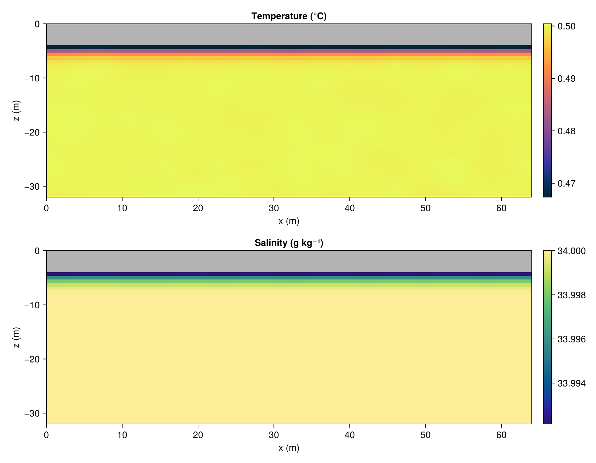

Melting beneath an ice lid (2D)
This example illustrates the SnowingOcean ice–ocean melt interface on a simple two-dimensional ($x$–$z$) problem: a slab of ice floating over warm, salty water. Heat carried to the ice base melts it; the cold, fresh meltwater forms a buoyant boundary layer beneath the ice. It is a stripped-down version of the ice-shelf cavity setup — flat ice, no sill, no rotation — meant to show the user interface.
The melt parameterization
At the ice–ocean interface the temperature $T_b$, salinity $S_b$ and melt rate $\dot m$ (m s⁻¹, positive for melting) are determined by a turbulent heat balance, a salt balance, and the requirement that the interface sits at the local freezing point (the three-equation formulation of Holland & Jenkins, 1999):
\[\begin{aligned} \rho_o c_o \, \gamma_T \,(T - T_b) &= \rho_i L \, \dot m , \\ \rho_o \, \gamma_S \,(S - S_b) &= \rho_i \, \dot m \, S_b , \\ T_b &= T^f(S_b, z) = T_0 - \Gamma S_b + \lambda z . \end{aligned}\]
Here $\gamma_T = \Gamma_T u_\star$ and $\gamma_S = \Gamma_S u_\star$ are turbulent exchange velocities, $u_\star = \sqrt{C_d \, |\mathbf{u}|^2}$ is the friction velocity, and $T^f$ is the (depth-dependent, linear) freezing temperature. Because the liquidus is linear, the system reduces to a closed-form quadratic for $S_b$ — no iteration. The two-equation formulation (TwoEquation) instead sets $S_b = S$ and obtains $\dot m$ directly from the heat balance.
SnowingOcean computes the kinematic boundary fluxes $J^T = -\gamma_T (T - T_b)$ and $J^S = -\gamma_S (S - S_b)$ into Fields (in a callback), and applies them as flux boundary conditions on the immersed ice base — with the same drag coefficient $C_d$ used for the momentum BulkDrag, so the melt and momentum fluxes are consistent.
using SnowingOcean
using Oceananigans
using Oceananigans.Units
using Oceananigans.Solvers: ConjugateGradientPoissonSolver
using CairoMakieGrid and immersed ice lid
A 2D x–z domain (Flat in y). The ice occupies the top ice_thickness meters; everything below is ocean. Increasing the y size turns this into a 3D simulation.
Lx, Lz = 64, 32
Nx, Nz = 96, 48
ice_thickness = 4 # m
grid = RectilinearGrid(size = (Nx, Nz),
halo = (5, 5),
topology = (Periodic, Flat, Bounded),
x = (0, Lx),
z = (-Lz, 0))
@inline is_ice(x, z) = z > -ice_thickness
grid = ImmersedBoundaryGrid(grid, GridFittedBoundary(is_ice))96×1×48 ImmersedBoundaryGrid{Float64, Oceananigans.Grids.Periodic, Oceananigans.Grids.Flat, Oceananigans.Grids.Bounded} on CPU with 5×0×5 halo:
├── immersed_boundary: Oceananigans.ImmersedBoundaries.GridFittedBoundary{Oceananigans.Fields.Field{Oceananigans.Grids.Center, Oceananigans.Grids.Center, Oceananigans.Grids.Center, Nothing, Oceananigans.Grids.RectilinearGrid{Float64, Oceananigans.Grids.Periodic, Oceananigans.Grids.Flat, Oceananigans.Grids.Bounded, Oceananigans.Grids.StaticVerticalDiscretization{OffsetArrays.OffsetVector{Float64, StepRangeLen{Float64, Base.TwicePrecision{Float64}, Base.TwicePrecision{Float64}, Int64}}, OffsetArrays.OffsetVector{Float64, StepRangeLen{Float64, Base.TwicePrecision{Float64}, Base.TwicePrecision{Float64}, Int64}}, Float64, Float64}, Float64, Float64, OffsetArrays.OffsetVector{Float64, StepRangeLen{Float64, Base.TwicePrecision{Float64}, Base.TwicePrecision{Float64}, Int64}}, Nothing, Oceananigans.Architectures.CPU}, Tuple{Colon, Colon, Colon}, OffsetArrays.OffsetArray{Bool, 3, Array{Bool, 3}}, Bool, Oceananigans.BoundaryConditions.FieldBoundaryConditions{Oceananigans.BoundaryConditions.BoundaryCondition{Oceananigans.BoundaryConditions.Periodic, Nothing}, Oceananigans.BoundaryConditions.BoundaryCondition{Oceananigans.BoundaryConditions.Periodic, Nothing}, Nothing, Nothing, Oceananigans.BoundaryConditions.NoFluxBoundaryCondition, Oceananigans.BoundaryConditions.NoFluxBoundaryCondition, Nothing, @NamedTuple{south_and_north::Nothing, bottom_and_top::KernelAbstractions.Kernel{KernelAbstractions.CPU, KernelAbstractions.NDIteration.StaticSize{(96, 1)}, Oceananigans.Utils.OffsetStaticSize{(1:96, 1:1)}, typeof(Oceananigans.BoundaryConditions.cpu__fill_bottom_and_top_halo!)}, west_and_east::Oceananigans.BoundaryConditions.PeriodicFillHalo{KernelAbstractions.Kernel{KernelAbstractions.CPU, KernelAbstractions.NDIteration.StaticSize{(1, 58)}, Oceananigans.Utils.OffsetStaticSize{(1:1, 1:58)}, typeof(Oceananigans.BoundaryConditions.cpu__fill_periodic_west_and_east_halo!)}, 96, 5}}, @NamedTuple{south_and_north::Tuple{Nothing, Nothing}, bottom_and_top::Tuple{Oceananigans.BoundaryConditions.NoFluxBoundaryCondition, Oceananigans.BoundaryConditions.NoFluxBoundaryCondition}, west_and_east::Tuple{Oceananigans.BoundaryConditions.BoundaryCondition{Oceananigans.BoundaryConditions.Periodic, Nothing}, Oceananigans.BoundaryConditions.BoundaryCondition{Oceananigans.BoundaryConditions.Periodic, Nothing}}}}, Nothing, Nothing}}
├── underlying_grid: 96×1×48 RectilinearGrid{Float64, Periodic, Flat, Bounded} on CPU with 5×0×5 halo
├── Periodic x ∈ [0.0, 64.0) regularly spaced with Δx=0.666667
├── Flat y
└── Bounded z ∈ [-32.0, 0.0] regularly spaced with Δz=0.666667The ice–ocean interface and boundary conditions
IceOceanInterface allocates the flux Fields and stores the melt/drag parameters; ice_ocean_boundary_conditions builds the (u, v, T, S) boundary conditions that read them on the immersed ice base.
interface = IceOceanInterface(grid)
bcs = ice_ocean_boundary_conditions(interface)(u = Oceananigans.FieldBoundaryConditions, with boundary conditions
├── west: DefaultBoundaryCondition (FluxBoundaryCondition: Nothing)
├── east: DefaultBoundaryCondition (FluxBoundaryCondition: Nothing)
├── south: DefaultBoundaryCondition (FluxBoundaryCondition: Nothing)
├── north: DefaultBoundaryCondition (FluxBoundaryCondition: Nothing)
├── bottom: DefaultBoundaryCondition (FluxBoundaryCondition: Nothing)
├── top: DefaultBoundaryCondition (FluxBoundaryCondition: Nothing)
└── immersed: ImmersedBoundaryCondition with west=Nothing, east=Nothing, south=Nothing, north=Nothing, bottom=Nothing, top=Flux, v = Oceananigans.FieldBoundaryConditions, with boundary conditions
├── west: DefaultBoundaryCondition (FluxBoundaryCondition: Nothing)
├── east: DefaultBoundaryCondition (FluxBoundaryCondition: Nothing)
├── south: DefaultBoundaryCondition (FluxBoundaryCondition: Nothing)
├── north: DefaultBoundaryCondition (FluxBoundaryCondition: Nothing)
├── bottom: DefaultBoundaryCondition (FluxBoundaryCondition: Nothing)
├── top: DefaultBoundaryCondition (FluxBoundaryCondition: Nothing)
└── immersed: ImmersedBoundaryCondition with west=Nothing, east=Nothing, south=Nothing, north=Nothing, bottom=Nothing, top=Flux, T = Oceananigans.FieldBoundaryConditions, with boundary conditions
├── west: DefaultBoundaryCondition (FluxBoundaryCondition: Nothing)
├── east: DefaultBoundaryCondition (FluxBoundaryCondition: Nothing)
├── south: DefaultBoundaryCondition (FluxBoundaryCondition: Nothing)
├── north: DefaultBoundaryCondition (FluxBoundaryCondition: Nothing)
├── bottom: DefaultBoundaryCondition (FluxBoundaryCondition: Nothing)
├── top: DefaultBoundaryCondition (FluxBoundaryCondition: Nothing)
└── immersed: ImmersedBoundaryCondition with west=Nothing, east=Nothing, south=Nothing, north=Nothing, bottom=Nothing, top=Flux, S = Oceananigans.FieldBoundaryConditions, with boundary conditions
├── west: DefaultBoundaryCondition (FluxBoundaryCondition: Nothing)
├── east: DefaultBoundaryCondition (FluxBoundaryCondition: Nothing)
├── south: DefaultBoundaryCondition (FluxBoundaryCondition: Nothing)
├── north: DefaultBoundaryCondition (FluxBoundaryCondition: Nothing)
├── bottom: DefaultBoundaryCondition (FluxBoundaryCondition: Nothing)
├── top: DefaultBoundaryCondition (FluxBoundaryCondition: Nothing)
└── immersed: ImmersedBoundaryCondition with west=Nothing, east=Nothing, south=Nothing, north=Nothing, bottom=Nothing, top=Flux)Model
A non-hydrostatic model with a linear equation of state, so the cold/fresh meltwater layer is buoyant relative to the warm, salty interior. We use a ConjugateGradientPoissonSolver: the default FFT-based pressure solver is only approximate next to immersed boundaries and would leave the velocity divergent at the ice base, so it is the appropriate choice whenever the ice is an immersed boundary.
equation_of_state = LinearEquationOfState(thermal_expansion=3.87e-5, haline_contraction=7.86e-4)
buoyancy = SeawaterBuoyancy(; equation_of_state)
model = NonhydrostaticModel(grid; buoyancy,
advection = WENO(order=9),
tracers = (:T, :S),
closure = ScalarDiffusivity(ν=1e-3, κ=1e-3),
pressure_solver = ConjugateGradientPoissonSolver(grid),
boundary_conditions = (; u=bcs.u, v=bcs.v, T=bcs.T, S=bcs.S))NonhydrostaticModel{CPU, ImmersedBoundaryGrid}(time = 0 seconds, iteration = 0)
├── grid: 96×1×48 ImmersedBoundaryGrid{Float64, Oceananigans.Grids.Periodic, Oceananigans.Grids.Flat, Oceananigans.Grids.Bounded} on CPU with 6×0×6 halo
├── timestepper: RungeKutta3TimeStepper
├── advection scheme: WENO{5, Float64, Oceananigans.Utils.BackendOptimizedDivision}(order=9)
├── tracers: (T, S)
├── closure: ScalarDiffusivity{ExplicitTimeDiscretization}(ν=0.001, κ=(T=0.001, S=0.001))
├── buoyancy: SeawaterBuoyancy with g=9.80665 and LinearEquationOfState(thermal_expansion=3.87e-5, haline_contraction=0.000786) with ĝ = NegativeZDirection()
└── coriolis: NothingWarm, salty water at rest, with a touch of noise to break symmetry.
Tᵢ(x, z) = 0.5 + 1e-3 * randn()
set!(model, T=Tᵢ, S=34)Run
A short simulation; the melt fluxes are refreshed each iteration by the callback.
simulation = Simulation(model, Δt=1.0, stop_time=20minutes)
conjure_time_step_wizard!(simulation, cfl=0.5, max_Δt=10.0)
add_melt_flux_callback!(simulation, interface)
run!(simulation)[ Info: Initializing simulation...
[ Info: ... simulation initialization complete (2.187 seconds)
[ Info: Executing initial time step...
[ Info: ... initial time step complete (7.993 seconds).
[ Info: Simulation is stopping after running for 16.133 seconds.
[ Info: Simulation time 20 minutes equals or exceeds stop time 20 minutes.Visualize
Temperature and salinity at the end of the run. The ocean cools and freshens in a boundary layer beneath the ice (shown in gray).
xc = xnodes(grid, Center())
zc = znodes(grid, Center())
solid = [is_ice(x, z) for x in xc, z in zc]
mask(φ) = (ψ = Array{Float64}(interior(φ)[:, 1, :]); ψ[solid] .= NaN; ψ)
function nanrange(ψ)
lo, hi = extrema(filter(!isnan, ψ))
return lo == hi ? (lo - 1, hi + 1) : (lo, hi)
end
Tn = mask(model.tracers.T)
Sn = mask(model.tracers.S)
fig = Figure(size=(900, 700))
axT = Axis(fig[1, 1], xlabel="x (m)", ylabel="z (m)", title="Temperature (°C)")
axS = Axis(fig[2, 1], xlabel="x (m)", ylabel="z (m)", title="Salinity (g kg⁻¹)")
hmT = heatmap!(axT, xc, zc, Tn; colormap=:thermal, colorrange=nanrange(Tn), nan_color=:gray70)
hmS = heatmap!(axS, xc, zc, Sn; colormap=:haline, colorrange=nanrange(Sn), nan_color=:gray70)
Colorbar(fig[1, 2], hmT)
Colorbar(fig[2, 2], hmS)
fig
This page was generated using Literate.jl.